Chapter 2 Potential Outcomes
6 Experimentalists’ view of causal inference
Rubin, (1975) and Holland, (1986) made up the aphorism:
“no causation without manipulation.”
Not everybody agrees with this point of view. However, it is quite helpful to clarify ambiguity in thinking about causal relationships. This book follows this view and defines causal effects using the potential outcomes framework (Neyman,, 1923; Rubin,, 1974). In this framework, an experiment, or at least a thought experiment, has a treatment, and we are interested in its effect on an outcome or multiple outcomes. Sometimes, the treatment is also called an intervention or a manipulation.
Example 2.1
If we are interested in the effect of taking aspirin or not on the relief of headaches, the intervention is taking aspirin or not.
Example 2.2
If we are interested in the effect of participating in a job training program or not on employment and wage, the intervention is participating in the job training program or not.
Example 2.3
If we are interested in the effect of studying in a small classroom or a large classroom on standardized test scores, the intervention is studying in a small classroom or not.
Example 2.4
Gerber et al., (2008) were interested in the effect of different get-out-to-vote messages on the voting behavior. The intervention is the different get-out-to-vote messages.
Example 2.5
Pearl, (2018) claimed that we could infer the effect of obesity on life span. A popular measure of obesity is the body mass index (BMI), defined as the body mass divided by the square of the body height in units of kg/m2. So the intervention can be different levels of BMI.
However, there are different levels of ambiguity in the interventions above. The meanings of interventions in Examples 2.1–2.4 are relatively clear, but the meaning of intervention on BMI in Example 2.5 is less clear. In particular, we can imagine different versions of BMI reduction: healthier diet, more physical exercise, bariatric surgery, etc. These different versions of the intervention can have quite different effects on the outcome. In this book, we will view the intervention in Example 2.5 as ill-defined without further clarifications.
Another ill-defined intervention is race. Racial discrimination is an important issue in the labor market, but it is not easy to imagine an experiment to change the race of any experimental unit. Bertrand and Mullainathan, (2004) give an interesting experiment that partially answers the question.
Example 2.6
Recall Example 1.1. Bertrand and Mullainathan, (2004) randomly change the names on the resumes, and compare the callback rates of resumes with African-American- or White-sounding names. For each resume, the intervention is the binary indicator of a Black-sounding or White-sounding name, and the outcome is the binary indicator of callback. I analyzed the following two-by-two table in Section 2.2:
| callback | no callback | |
|---|---|---|
| Black | 157 | 2278 |
| White | 235 | 2200 |
From the above, we can compare the probabilities of being called back among Black-sounding and White-sounding names:
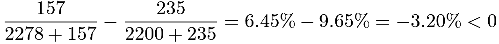 |
with 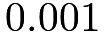 -value from the Fisher exact test being much smaller than
-value from the Fisher exact test being much smaller than
In Bertrand and Mullainathan, (2004)’s experiment, the treatment is the perceived race which can be manipulated by experimenters. They design an experiment to answer a well-defined causal question. However, critics may raise the concern that the causal effect of the perceived race may differ from the causal effect of the actual race.
7 Formal notation of potential outcomes
Consider a study with  experimental units indexed by
experimental units indexed by  . As a starting point, we focus on a treatment with two levels:
. As a starting point, we focus on a treatment with two levels:  for the treatment and
for the treatment and  for the control. For each unit
for the control. For each unit  , the outcome of interest
, the outcome of interest  has two versions:
has two versions:
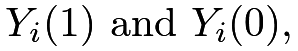 |
which are potential outcomes under the hypothetical interventions 1 and 0. Neyman, (1923) first used this notation. It seems intuitive but has some hidden assumptions. Rubin, (1980) made the following clarifications on the hidden assumptions.
Assumption 2.1 (no interference)
Unit ’s potential outcomes do not depend on other units’ treatments. This is sometimes called the no-interference assumption.
Assumption 2.2 (consistency)
There are no other versions of the treatment. Equivalently, we require that the treatment levels be well-defined, or have no ambiguity at least for the outcome of interest. This is sometimes called the consistency assumption.4
Assumption 2.1 can be violated in infectious diseases or network experiments. For instance, if some of my friends receive flu shots, my chance of getting the flu decreases even if I do not receive the flu shot; if my friends see an advertisement on Facebook, my chance of buying that product increases even if I do not see the advertisement directly. It is an active research area to study situations with interfering units in modern causal inference literature (Hudgens and Halloran,, 2008, e.g.,).
Assumption 2.2 can be violated for treatments with complex components. For instance, when studying the effect of cigarette smoking on lung cancer, the type of cigarettes may matter; when studying the effect of college education on income, the type and major of college education may matter.
Rubin, (1980) called the Assumptions 2.1 and 2.2 above together the Stable Unit Treatment Value Assumption (SUTVA).
Under SUTVA, Rubin, (2005) called the
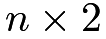
matrix of potential outcomes the Science Table: |
 |
 |
|
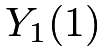 |
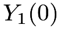 |
 |
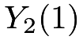 |
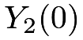 |
| ⋮ | ⋮ | ⋮ |
|
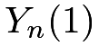 |
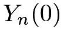 |
Due to the fundamental contributions of Neyman and Rubin to statistical causal inference, the potential outcomes framework is sometimes referred to as the Neyman Model, the Neyman–Rubin Model, or the Rubin Causal Model. I prefer using “the potential outcomes framework” in this book and my other scientific writings.
Causal effects are functions of the Science Table. Inferring individual causal effects
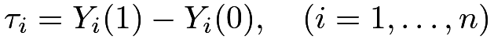 |
is fundamentally challenging because we can only observe either or for each unit , that is, we can observe only half of the Science Table. As a starting point, most parts of the book focus on the average causal effect (ACE):
 |
 |
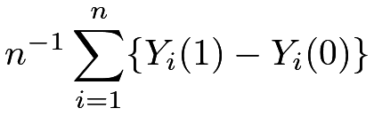 |
||
|
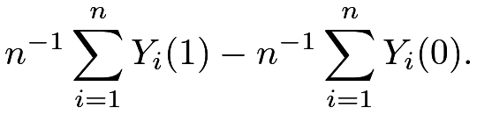 |
But we can extend our discussion to many other parameters (also called estimands). Problem 2.2 gives some examples.
7.1 Causal effects, subgroups, and the non-existence of Yule–Simpson Paradox
If we have two subgroups defined by a binary variable  , we can define the subgroup causal effects as
, we can define the subgroup causal effects as
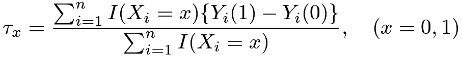 |
where  is the indicator function.
A simple identity is that
is the indicator function.
A simple identity is that
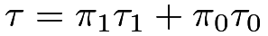 |
where
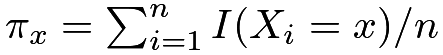
is the proportion of units with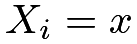
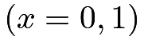
. Therefore, if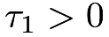
and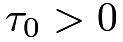
, we must have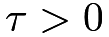
. The Yule–Simpson Paradox thus cannot happen to causal effects.7.2 Subtlety of the definition of the experimental unit
I now discuss a subtlety related to the definition of the experimental unit. Simply speaking, the experimental unit can be different from the physical unit. For example, if I did not take aspirin before and my headache did not go away, but I take aspirin now and my headache goes away, then you might think that we can observe my potential outcomes under both control and treatment. Let index myself, and let  denote the indicator of no headache. Then, the above heuristic suggests that
denote the indicator of no headache. Then, the above heuristic suggests that
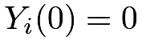
and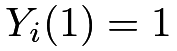
, so it seems that aspirin kills my headache. But this logic is very wrong because of the misunderstanding of the definition of the experimental unit. At different time points, I, the same physical person, become two distinct experimental units, indexed by “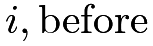
” and “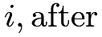
”. Therefore, we have four potential outcomes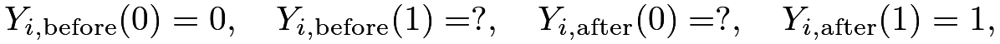 |
with two of them observed and two of them missing. The individual causal effects
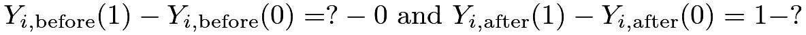 |
are unknown. It is possible that my headache goes away even if I do not take aspirin:
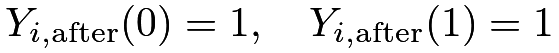 |
which implies zero effect; it is also possible that my headache does not go away if I do not take aspirin:
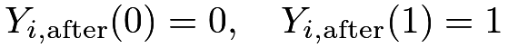 |
which implies a positive effect of aspirin.
The wrong heuristic argument might get the right answer if the control potential outcomes are stable at the before and after periods:
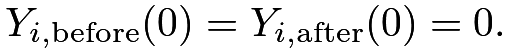 |
But this assumption is rather strong and fundamentally untestable. Rubin, (2001) offered a related discussion in the context of self-experimentation for causal effects.
8 Treatment assignment mechanism
Let  be the binary treatment indicator for unit , vectorized as
be the binary treatment indicator for unit , vectorized as
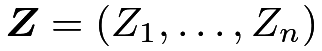
. The observed outcome of unit is a function of the potential outcomes and the treatment indicator:
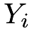 |
|
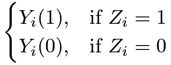 |
(3) | ||
|
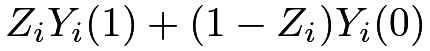 |
(4) | |||
|
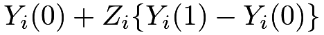 |
(5) | |||
|
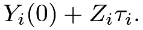 |
(6) |
Equation (3) is the definition of the observed outcome. Equation (4) is equivalent to (3). It is a trivial fact, but Pearl, 2010b () viewed it as the fundamental bridge between the potential outcomes and the observed outcome. Equations (5) and (6) highlight the fact that the individual causal effect  can be heterogeneous across units.
can be heterogeneous across units.
The experiment reveals only one of unit ’s potential outcomes with the other one missing:
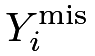 |
|
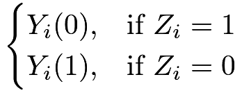 |
||
|
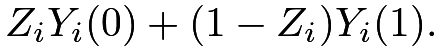 |
The missing potential outcome corresponds to the opposite treatment level of unit . For this reason, the potential outcomes framework is also called the counterfactual framework. 5
This name can be confusing because before the experiment, both the potential outcomes can be observed. Only after the experiment, one potential outcome is observed whereas the other potential outcome is counterfactual.
The treatment assignment mechanism, i.e., the probability distribution of  , plays an important role in inferring causal effects. The following simple numerical examples illustrate this point. We first generate potential outcomes from Normal distributions with the average causal effect close to
, plays an important role in inferring causal effects. The following simple numerical examples illustrate this point. We first generate potential outcomes from Normal distributions with the average causal effect close to
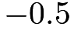
.A perfect doctor assigns the treatment to the patient if s/he knows that the individual causal effect is non-negative. This results in a positive difference in means of the observed outcomes:
A clueless doctor does not know any information about the individual causal effects and assigns the treatment to patients by flipping a fair coin. This results in a difference in means of the observed outcomes close to the true average causal effect:
The above examples are hypothetical since no doctors perfectly know the individual causal effects. However, the examples do demonstrate the crucial role of the treatment assignment mechanism. This book will organize the topics based on the treatment assignment mechanism.
9 Homework Problems
2.1 A perfect doctor
Following the first perfect doctor example in Section 8, assume the potential outcomes are random variables generated from
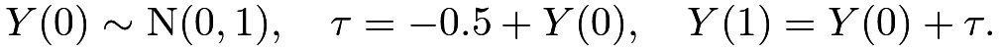 |
The binary treatment is determined by the treatment effect as
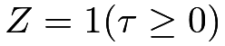
, and the observed outcome is determined by the potential outcomes and the treatment by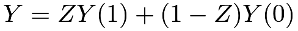
. Calculate the difference in means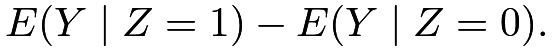 |
Remark: The mean of a truncated Normal random variable equals
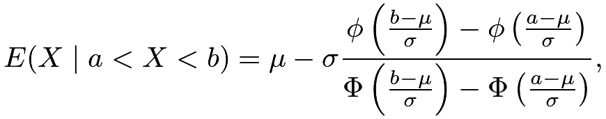 |
where
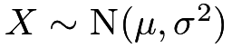
, and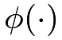
and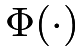
are the probability density and cumulative distribution functions of a standard Normal random variable .
.
2.2 Nonlinear causal estimands
With potential outcomes
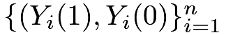
for units under the treatment and control, the difference in means equals the mean of the individual treatment effects:
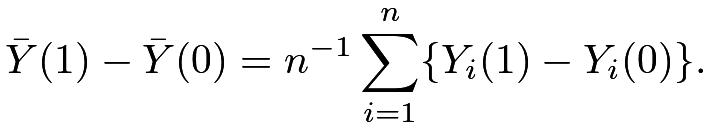 |
Therefore, the average treatment effect is a linear causal estimand in the sense that the difference in average potential outcomes equals the average of the differences in individual potential outcomes.
Other estimands may not be linear. For instance, we can define the median treatment effect as
which is, in general, different from the median of the individual treatment effect
- 1.
Give numerical examples that have , , and , respectively.
- 2.
Which estimand makes more sense, or ? Why? Use examples to justify your conclusion. If you feel that both and can make sense in different applications, you can also give examples to justify both estimands.
2.3 Average and individual effects
Give a numerical example in which but the proportion of units with is smaller than  . That is, the average causal effect is positive, but the treatment benefits less than half of the units.
. That is, the average causal effect is positive, but the treatment benefits less than half of the units.
2.4 Recommended reading
Holland, (1986) is a classic review article on statistical causal inference. It popularized the name “Rubin Causal Model” for the potential outcomes framework. At the University of California Berkeley, we call it the “Neyman Model” for obvious reasons.
脚注
4. This notion of consistency is totally different from the one in Definition 30.4 in Chapter 30.
5. The terminology “counterfactual” is more popular in philosophy, probably due to Lewis, (1973).